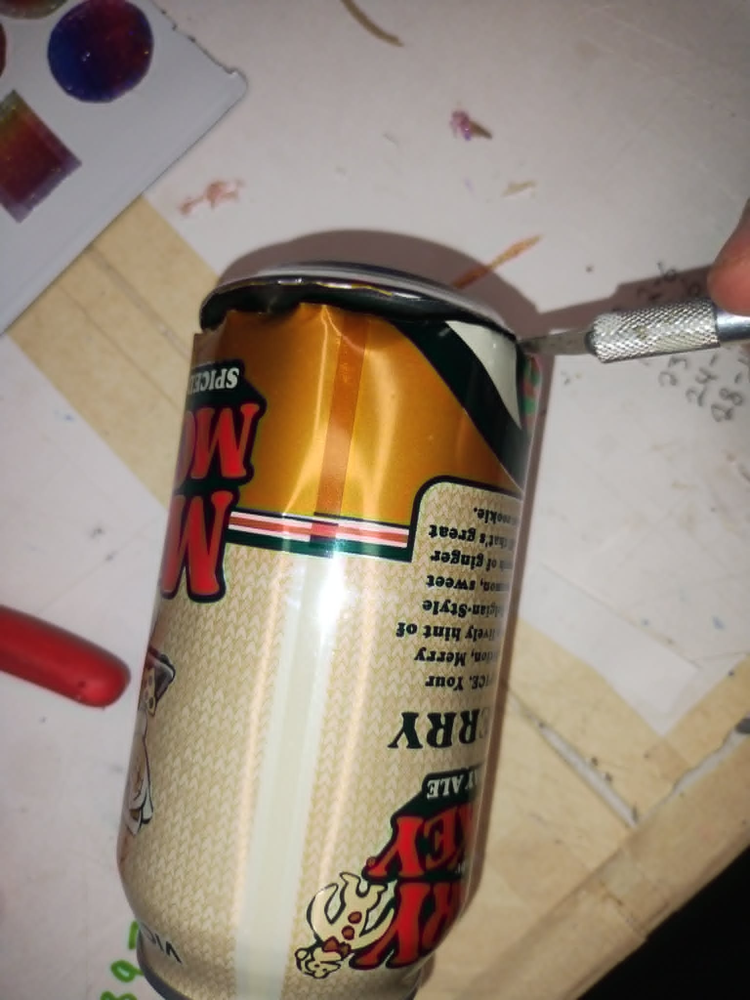
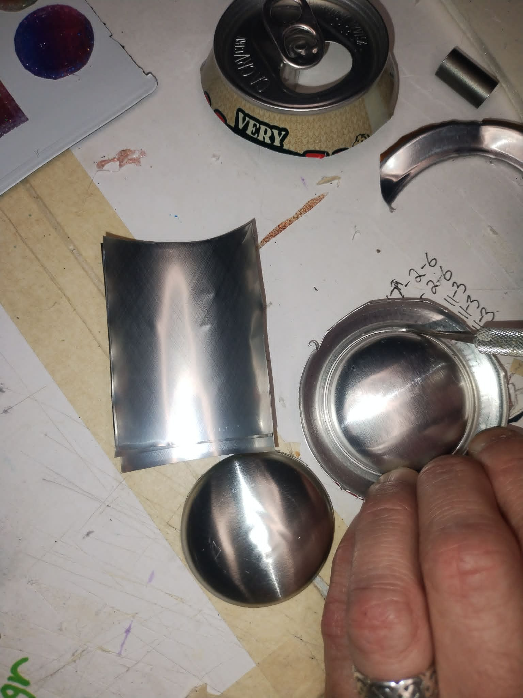
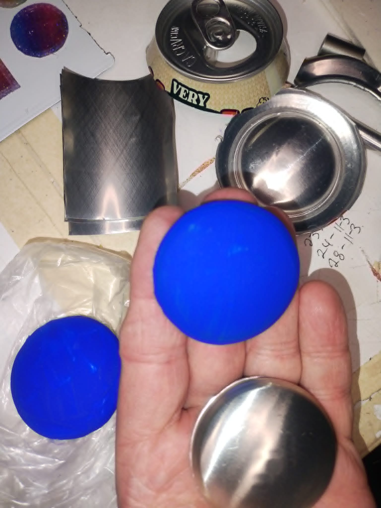
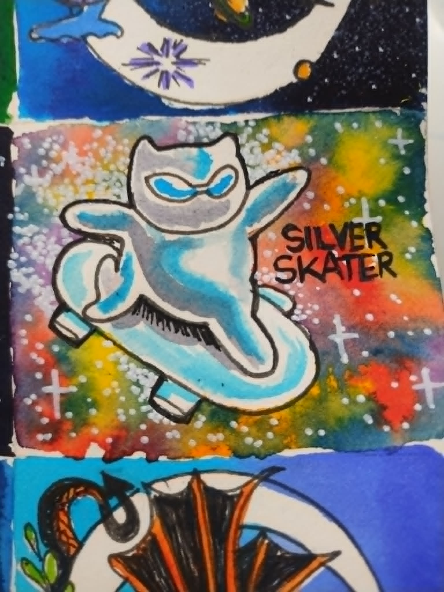
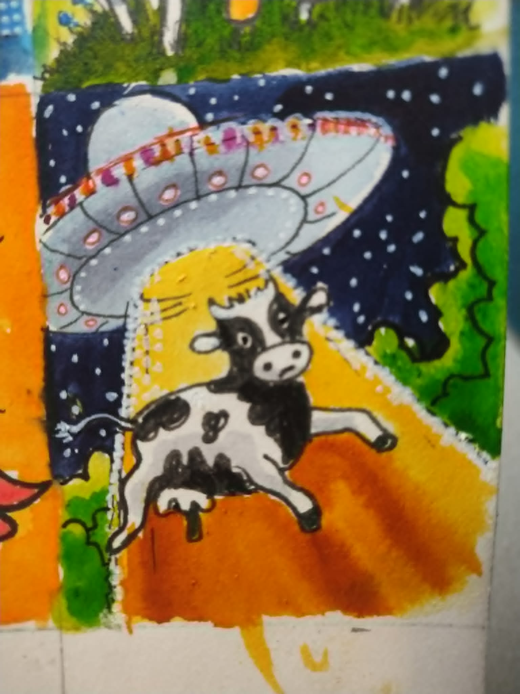
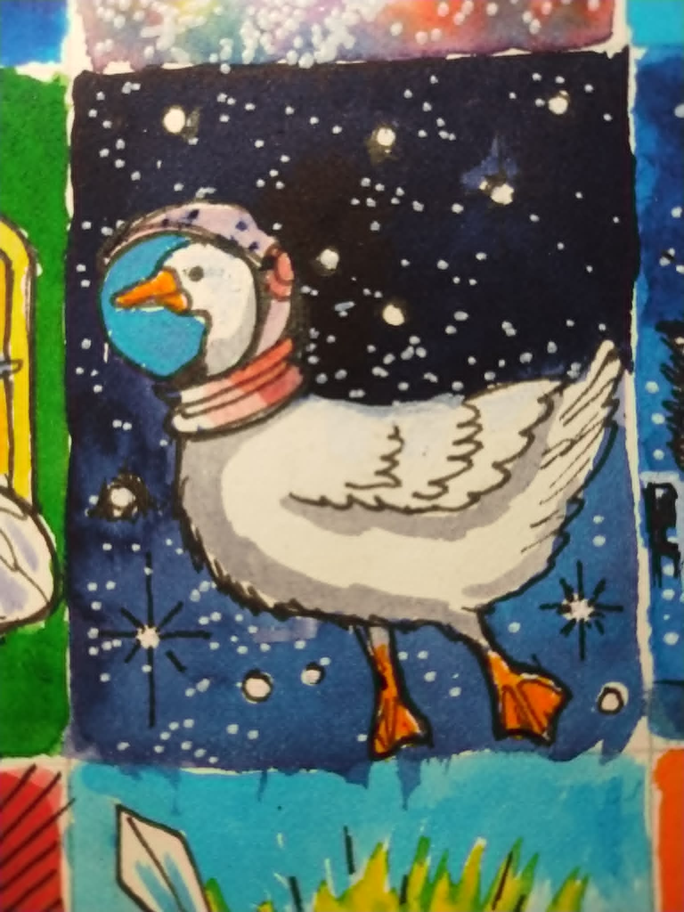

How It's Made



Special Feature: Art for the Blind
In a combined effort to reuse materials and extend the joys of art to those without sight, aluminum cans are carefully deconstructed, with the flat sides being straightened and cut into rectangles.
These are then engraved with art and simple phrases in braille, creating unique pieces that can be enjoyed with and without the ability to see. The bottoms of the cans are also cut out and painted to
create the bases for other pieces of art, and the rest of the can is then recycled.



How Each Tiny World Is Made
Every miniature painting begins as an original watercolor, created slowly by hand. Once the artwork is complete, it’s mounted to an acid-free matboard backing to help preserve it for years to come.
The small frame is then carefully painted or stained, and the artwork with its backing is fitted inside. A second matboard backing, cut to match the frame, is added to create a sealed and sturdy finish.
The micro paintings include a neodymium magnet, perfect for fridges or other metal surfaces. A small groove is carved into the back layer, the magnet is securely glued in place, and sealed in with professional
artist tape. A hanging hook is included in the mini paintings, with each one being made by hand. Framer’s tape is applied across the back, the hook is positioned, and the backing is sealed. The hook is designed
to move slightly so the artwork can be straightened once it’s on the wall.
Before leaving the studio, every piece is inspected, signed, and carefully packaged — ready to help someone be someplace else for a while.